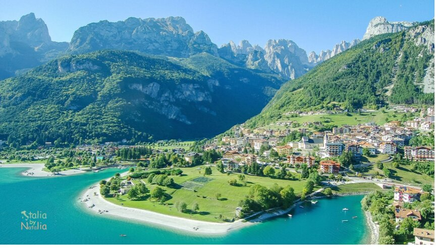
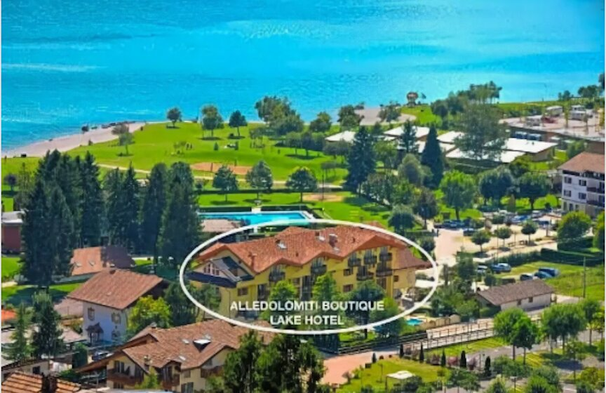
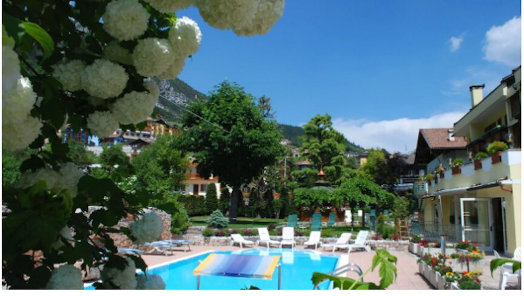
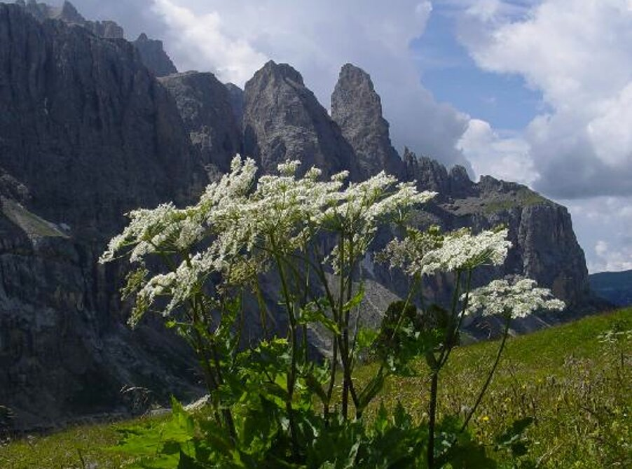
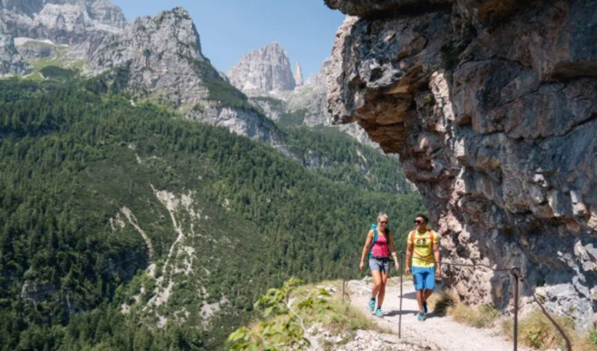
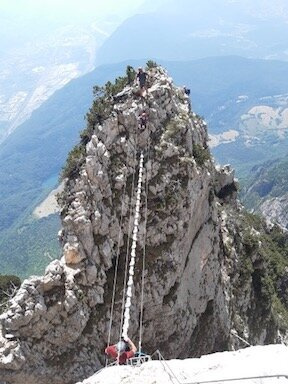
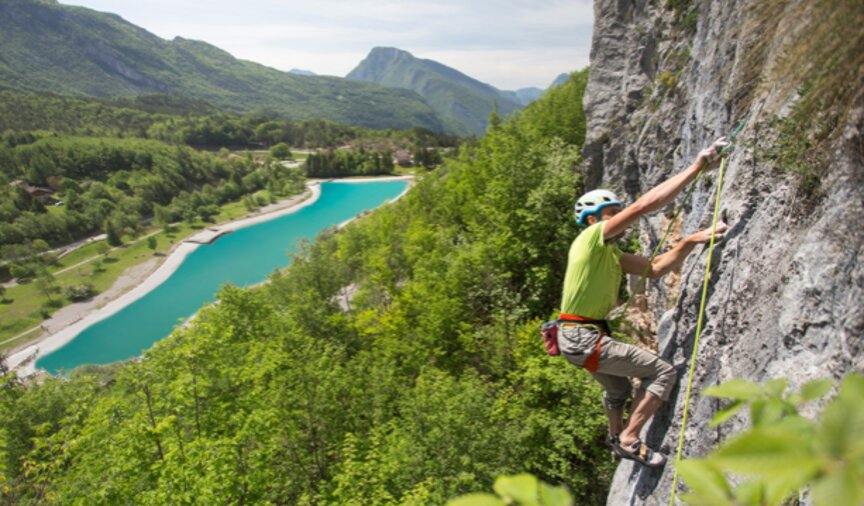

Welcome to ASIC 2024
The 24th Annual Summer Interdisciplinary Conference, held at the Alle Dolomiti Boutique Lake Hotel, Via Lungo Lago 18, 38018 Molveno (TN), in the Dolomites of Trentino, Italy.

The conference had talks every afternoon and evening on the six consecutive days, Monday June 24 to Saturday June 29, 2024 (the last talks were held the evening of June 29).
The Alle Dolomiti Boutique Lake Hotel is a 4* hotel with views of Lake Molveno, about 100 meters from the water; see the hotel website. The talks were held in the adjacent Molveno Conference Center, a two-minute walk from the hotel.
Molveno
Molveno sits on the shores of Lake Molveno, just east of the Brenta Dolomites and about 70 minutes' drive from Trento (a much shorter distance as the crow flies, but the intervening mountains make for a longer drive). It offers a spectacular setting for a wide range of outdoor mountain and lake activities.
About the conference
ASIC is truly interdisciplinary and welcomes talks aimed at a general audience on any subject, though most talks have ranged across modeling of cognition, neuroscience and cognitive neuroscience, psychology (perception, psychophysics, attention, information processing, memory and cognition), computer science and artificial intelligence, machine intelligence and learning, methodology and statistics, linguistics and psycholinguistics, and philosophy of mind. Speakers are asked to make their talks comprehensible and interesting to a wide scientific audience, giving overviews of their field as well as their own recent work.
ASIC follows the successful format of previous years: days are free for leisure activities and discussion among participants, talks are held in the late afternoon and early evening, followed by dinner. The date is chosen to make it convenient for attendees to bring family and friends.
The talks
There was a single speaking session each day (no posters), intentionally organized to maximize the dissimilarity of each day's presentations, with about eight 30-minute talks per day. If more attendees wished to speak than the schedule allowed, the organizer selected speakers and could shorten talk lengths.
Daily format
The conference opened with registration and a reception with drinks and food from about 15:30 on Monday, June 24. On subsequent days there were drinks and light snacks from about 15:40, followed by a session of up to eight spoken presentations in the Molveno Conference Center, typically running from 16:00 to about 20:00, followed by dinner together at the hotel at about 20:15.
Invitation
The conference was open to all interested parties and their family and friends — no invitation was needed to attend.
Organizer
Richard M. Shiffrin of Indiana University – Bloomington is the organizer (see the Contact tab for all contact info).
Associate organizers
- Stephan Lewandowsky, University of Bristol
- Fritz Breithaupt, Indiana University
- Jennifer Trueblood, Indiana University
- Colin Allen, University of Pittsburgh
- Franco Pestilli, University of Texas
For a listing of all past ASIC sites, see the previous ASIC sites document.
Registration
Registration and talk submissions were handled through the conference website, alongside the Indiana University Conference Bureau's registration system.
Attendees were not officially on the schedule to present a talk until they had registered and submitted the registration fee. The website hosted pages for viewing currently approved talks, adding a talk or presentation, and completing registration.
There was only a small number of speaking slots (a maximum of eight 30-minute talks on each of the six days). In the event that more attendees wished to speak than time allowed, the organizer adapted talk lengths and/or selected who would present.
Lodging
Rooms were held at the Alle Dolomiti Boutique Lake Hotel (Ramada Resort), Via Lungo Lago 18, 38018 Molveno (TN), Dolomiti di Brenta – Trentino.

The hotel is a 4* property with an excellent restaurant, bar/lounge, coffee shop, pool, terrace, full-service spa, spa tub, and free wifi — a little smaller than most ASIC hotels (38 rooms total, with 35 held for ASIC), so early reservations were important. See the hotel website.

Lodging rates
Rates were inclusive except for a tourist tax of about 2.5–3 euro per day per person, and were half-board (breakfast and dinner included).
| Occupancy | Room type | Rate |
|---|---|---|
| One person | Single bed room (2 available) | 110 €/day |
| Standard Double (7 available) | 145 €/day | |
| Classic/Comfort Double (10 available) | 158 €/day | |
| Superior Double (12 available) | 168 €/day | |
| Junior Suite (2 available) | 230 €/day | |
| Large Suite (2 available) | 250 €/day | |
| Two people | Standard Double | 182 €/day |
| Classic/Comfort Double | 198 €/day | |
| Superior Double | 210 €/day | |
| Junior Suite | 230 €/day | |
| Large Suite | 250 €/day |
Children
Reduced rates applied for children, depending on age (only a few rooms could accommodate extra beds, so early booking was essential):
| Age | Discount |
|---|---|
| 0–2 years | −50% |
| 3–6 years | −30% |
| 7–11 years | −20% |
| 12–16 years | −10% |
The online booking system only accepted the dates June 24–29; for other dates, or for bookings involving children, attendees were asked to email the hotel directly. If no rooms were available at the conference hotel, four nearby hotels offered breakfast and lodging within a few minutes' walk — Garni Lago Alpino, Hotel Zurigo, Residence Rio Piccolo, and Garden Hotel Bellariva — with dinner at the conference hotel available to those staying elsewhere for an added 35 euro.
Reservations & contact
Bookings could be made online (entering promo code ASIC), by email at info@alledolomiti.com, or by phone at +39 (0)461 586057. Refundable bookings required a 30% deposit; non-refundable bookings required full payment at the time of booking.
Cancellation policy
| Cancellation window | Penalty |
|---|---|
| Before January 1, 2024 | Free |
| January 1 – May 24, 2024 | 5% |
| May 24 – June 7, 2024 | 30% |
| June 7 – June 23, 2024 | 50% |
| No show after June 23, 2024 | 100% |
Attendees also had the option of purchasing separate trip insurance.
Dining & Receptions
Breakfast and dinner were included in the daily lodging rate for attendees staying at the conference hotel.
The hotel restaurant is highly rated and serves attendees staying elsewhere as well as hotel guests. Dinners were served by waiters from a menu (with vegetarian options) at about 20:15, once the day's talks had ended. Attendees staying at the hotel gave their dinner order at breakfast, along with their room number; attendees staying elsewhere could purchase dinner for 35 euro, ordering when they arrived. Alcoholic drinks at any meal or reception were paid for individually.
Travel
The nearest local airport to Molveno is Bolzano/Bozen (BZO); the closest international airports are Innsbruck, Austria, and Milan and Venice, Italy.

| From | Driving | Train & bus |
|---|---|---|
| Innsbruck | About 2.5 hrs | About 4.5–5 hrs |
| Venice | About 3 hrs | About 5 hrs |
| Milan | About 3–3.5 hrs | About 5 hrs |
The hotel address is Via Lungo Lago, 18, 38018 Molveno (TN), Italy — consult a mapping service such as Google Maps for local directions.
Activities
Molveno sits in a spectacular setting on the shores of Lake Molveno, just east of the Brenta Dolomites, offering nearly every kind of mountain and lake activity.

The area offers hiking, scrambling and peak bagging, via ferrata, mountain and road biking, rock climbing, mountaineering (though most mountaineering objectives require a day or more before or after the conference), paragliding, white-water rafting, kayaking, canyoning, a variety of lake activities and swimming, and leisure activities such as sightseeing, fishing, tennis, and golf.
Molveno itself sits at 864m (2,834 ft); a cable car reaches Pradel at 1,367m (4,484 ft), with a connecting chairlift to Palon di Tovre at 1,530m (5,020 ft). The high point of the Brenta group, Cima Brenta, tops out at 3,150m (10,334 ft) — a gain of 2,286m (7,500 ft) from Molveno.
Hiking & refugios
Countless hiking itineraries are suitable for day trips that return in time for the 16:00 session; others — including routes linking refugio to refugio with overnight stays — are best scheduled before or after the conference. The cable car and chairlift to Palon di Tovre give access to a network of trails, including a roughly hour-long hike to Refugio Cros dell'Altissimo (about 1,500m), from which paths continue past Cima Brenta to the Tuckett refugio in the heart of the range.
Via ferrata
Via ferrata routes let participants — families and children among them — climb along cliffs and canyons using iron cables fixed to the rock, without technical climbing skills. The Brenta Dolomites have many spectacular routes, including "Delle Aquile" ("Flight of the Eagle").

Rock climbing
The area around Molveno and the Brenta offers rock climbing for all levels, from lakeside crags to bigger alpine routes.

Other activities
Paragliding, white-water rafting, kayaking, and canyoning are all available nearby, alongside lake swimming and boating on Lake Molveno itself, and more leisurely options such as sightseeing, fishing, tennis, and golf.
Contact
Email and telephone are preferred for all correspondence.
Conference organizer
Rich Shiffrin
Indiana University – Bloomington
shiffrin@indiana.edu
Tel: 812-855-4972 · Cell: 812-219-5892
Postal address
Annual Summer Interdisciplinary Conference (ASIC 2024)
c/o Prof. Richard Shiffrin, Psychological and Brain Sciences Department
Indiana University, 1101 E. 10th St., Bloomington, IN 47405